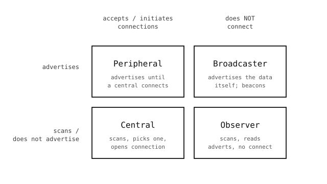

11.4. Реклама и сканирование¶
Два BLE-устройства, которые никогда раньше не встречались, сначала должны найти друг друга. Сеть решает это, выдавая каждому устройству адрес из общего пула и позволяя любой стороне достичь другой через маршрутизаторы. У BLE нет ни маршрутизаторов, ни общего пула, и – между большинством пар устройств – вообще никаких предшествующих отношений. Generic Access Profile (GAP) вместо этого решает задачу обнаружения с помощью шаблона «передавать и слушать». Одна сторона рекламирует себя – она с регулярным интервалом передаёт короткий пакет по трём рекламным каналам, описывая, кто она. Другая сторона сканирует – она прочёсывает те же три канала, слушая эти пакеты.
GAP определяет вокруг этого шаблона четыре роли, каждая из которых представляет собой определённое сочетание рекламы и прослушивания.
11.4.1. Четыре роли GAP¶

Четыре роли GAP. Вертикальная ось – рекламирует ли устройство себя; горизонтальная ось – принимает ли оно (или инициирует) соединения.¶
Peripheral рекламирует пакеты, которые говорят «я здесь, и вы можете ко мне подключиться». Когда другое устройство открывает соединение, peripheral прекращает рекламу и начинает обслуживать запросы GATT. Нагрудные кардиодатчики, термометры и большинство камер-в-роли-датчиков выступают как peripheral.
Central сканирует в поисках peripheral, выбирает одно из них и инициирует соединение. После подключения он общается по GATT как клиент. Телефоны, ноутбуки и камеры, выступающие сборщиками данных, являются central.
Broadcaster рекламирует себя, но никогда не принимает соединений. Полезная нагрузка его рекламы и есть данные – подключаться не к чему. iBeacon и большинство маяков присутствия в магазинах являются broadcaster.
Observer сканирует эти рекламные передачи и читает полезную нагрузку, снова без какого-либо подключения. Камера, которая слушает находящиеся рядом маяки и реагирует на услышанное, является observer.
Одно устройство может играть более одной роли одновременно – камера может быть peripheral, публикующим собственное состояние, и central, подключающимся к находящемуся рядом датчику. Радиомодуль мультиплексирует эту работу.
11.4.2. Что содержит рекламный пакет¶
Рекламный пакет мал: 31 байт полезной нагрузки, или 62, если рекламодатель также публикует ответ на сканирование (scan response), который сканеры могут запросить на лету. Полезная нагрузка – это список коротких типизированных полей:
Flags. Допускает соединение или нет, общая / ограниченная обнаруживаемость.
Local name. Короткая, понятная человеку строка – имя, которое операционная система на телефоне или ноутбуке показывает в своём меню Bluetooth.
Service UUIDs. Список идентификаторов GATT-сервисов, которые размещает устройство, чтобы сканер мог распознавать подходящие peripheral без предварительного подключения. Нагрудный кардиодатчик рекламирует
0x180D– стандартный UUID сервиса Heart-Rate – и приложение для измерения пульса на телефоне уже только по этому знает, что к устройству стоит подключиться.Appearance. 16-битное значение из списка назначенных номеров Bluetooth (датчик, обобщённое мультимедиа, обобщённые часы, …) – подсказка для central о том, что отображать.
Manufacturer-specific data. Произвольные байты с префиксом в виде идентификатора компании. iBeacon используют это поле для передачи своих UUID, major и minor; пользовательские приложения могут поместить сюда всё, что им угодно.
Рекламные полезные нагрузки тесны. Предел в 31 байт превращает выбор того, что включить, в реальное проектное решение – длинное удобочитаемое имя может быстро не оставить места для service UUID. API aioble.advertise() принимает каждое из этих полей как именованный аргумент и собирает байты за вас, автоматически переливая лишнее в ответ на сканирование, если основной пакет заполняется.
11.4.3. Активное и пассивное сканирование¶
Сканер может работать пассивно, когда он слушает рекламные пакеты и разбирает то, что приходит, или активно, когда он также отправляет каждому рекламодателю запрос на сканирование (scan request) и разбирает приходящий в ответ scan response.
Пассивное сканирование видит только исходный рекламный пакет (до 31 байта). Активное сканирование удваивает это – ответ на сканирование – это ещё 31 байт, который peripheral может использовать для полей, не уместившихся в основной пакет. Активное сканирование также расходует энергию с обеих сторон, поскольку сканер передаёт запрос, а рекламодатель передаёт дополнительный пакет, так что это осознанный выбор, а не значение по умолчанию.
В API aioble параметр active=True у aioble.scan() переключает режим, и каждый ScanResult предоставляет объединённые adv_data и resp_data, а также вспомогательные методы вроде result.name() и result.services(), которые скрывают разбор на уровне байтов.
Примечание
Атрибуты adv_data и resp_data – это сырые полезные нагрузки рекламы и ответа на сканирование (bytes). Вспомогательные методы – name(), services(), manufacturer() – охватывают распространённые стандартные поля и являются правильным выбором в 99% случаев. Берите сырые байты только тогда, когда вам нужно поле производителя, которое вспомогательные методы не разбирают (URL-адреса Eddystone, UUID/major/minor от iBeacon, пользовательские типы рекламы). Компоновка байтов стандартная, в формате TLV: каждое поле – это length, type, value....
11.4.4. Интервал рекламы¶
Как часто peripheral осуществляет широковещательную передачу – это компромисс между энергопотреблением и задержкой обнаружения. Рекламные пакеты, рассылаемые каждые 20 мс, подхватываются сканером почти мгновенно, но держат радиомодуль занятым и разряжают батарею; рекламные пакеты раз в секунду почти не расходуют энергию, но заставляют сканер дольше прочёсывать эфир, прежде чем заметить устройство.
interval_us у aioble.advertise() задаёт интервал в микросекундах:
От 20 000 до 100 000 мкс (20 мс - 100 мс) – быстрое сопряжение, приложение ожидает быстрого отклика, устройство с подключённым питанием.
От 250 000 до 1 000 000 мкс (250 мс - 1 с) – разумное значение по умолчанию для peripheral с питанием от батареи, который хочет быть обнаруживаемым, не сжигая заряд.
Выше 1 000 000 мкс – медленная фоновая широковещательная передача, маяки, отправляющие обновление местоположения каждые несколько секунд.
У стороны сканера есть свои настройки – aioble.scan() принимает interval_us и window_us (как часто сканер пробуждает свой радиомодуль и как долго слушает каждый раз). Значения по умолчанию вполне подходят; единственное распространённое изменение – сделать оба равными для непрерывного сканирования, когда заряд батареи не важен.
11.4.5. Шаблоны без установления соединения – broadcaster и observer¶
Страницы Работа в роли периферийного устройства и Работа в роли центрального устройства прорабатывают connectable-форму API – когда peripheral принимает соединение, и обе стороны обмениваются данными через GATT. Другая форма – connectionless: broadcaster передаёт полезную нагрузку в виде рекламы, и любой observer в зоне действия может прочитать её, ни разу не подключаясь. Маяки, датчики присутствия и односторонняя телеметрия – всё это живёт здесь.
Broadcaster – это aioble.advertise() с connectable=False. Полезную нагрузку несут manufacturer-specific data:
import aioble
import asyncio
import struct
_COMPANY_ID = const(0xFFFF) # 0xFFFF is "no specific vendor"
async def beacon():
seq = 0
while True:
seq = (seq + 1) & 0xFFFF
payload = struct.pack("<H", seq)
await aioble.advertise(
interval_us=500000,
connectable=False,
name="openmv-beacon",
manufacturer=(_COMPANY_ID, payload),
timeout_ms=1000, # one cycle, then loop
)
asyncio.run(beacon())
Именованный аргумент timeout_ms завершает вызов рекламы через секунду; внешний цикл перевыпускает её со следующим порядковым номером, чтобы слушатели видели свежие данные. Флаг connectable=False – это то, что придаёт рекламе broadcaster-стиль – камера не ответит на запрос на подключение, даже если он придёт.
Observer – это соответствующий сканер, работающий только на чтение. Он бесконечно выполняет aioble.scan(), разбирает входящие рекламные передачи и никогда не вызывает connect():
import aioble
import asyncio
_COMPANY_ID = const(0xFFFF)
async def watch():
async with aioble.scan(duration_ms=0, active=False) as scanner:
async for result in scanner:
for company, data in result.manufacturer(filter=_COMPANY_ID):
print(result.device.addr_hex(),
"rssi", result.rssi, "data", data)
asyncio.run(watch())
duration_ms=0 сканирует, пока не завершится контекстный менеджер; active=False оставляет собственный радиомодуль observer безмолвным (никаких запросов на ответ-сканирования) ради минимального энергопотребления. Аргумент filter= у manufacturer() отбрасывает каждую рекламную передачу, не соответствующую идентификатору компании, так что цикл срабатывает только на трафик от broadcaster.
11.4.6. От обнаружения к соединению¶
Как только central выбирает peripheral для общения, он прекращает слушать, отправляет запрос на подключение (connect request) по тому рекламному каналу, который peripheral использовал последним, и обе стороны переходят на перескакивающие каналы данных канального уровня. Peripheral в этот момент обычно прекращает рекламу. Что происходит дальше – параметры соединения, обнаружение GATT, срок жизни канала – описано в Соединения.